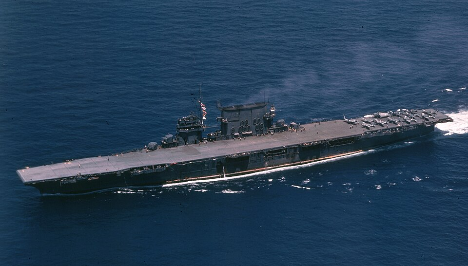

USS Saratoga (CV-3)
Portaviones de Estados Unidos, perteneciente a la clase Lexington. Combatió en Guadalcanal, las Salomón y otras campañas del Pacífico, con periodos de reparación después de ataques submarinos.

Diseño y función
USS Saratoga (CV-3) pertenecía a la clase Lexington. Operaciones aeronavales y apoyo a fuerzas anfibias. Sus prestaciones se detallan en la tabla técnica, con las fechas o condiciones disponibles en la referencia.
Operaciones y trayectoria
Combatió en Guadalcanal, las Salomón y otras campañas del Pacífico, con periodos de reparación después de ataques submarinos. También cooperó con la flota británica en el Índico.
Destino final y conservación
Sobrevivió a la guerra y fue hundido durante las pruebas nucleares de Crossroads el 25 de julio de 1946.